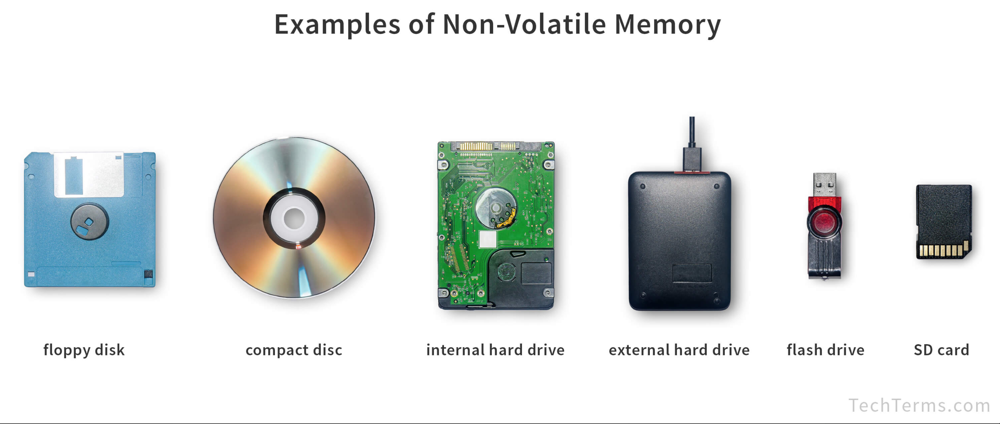
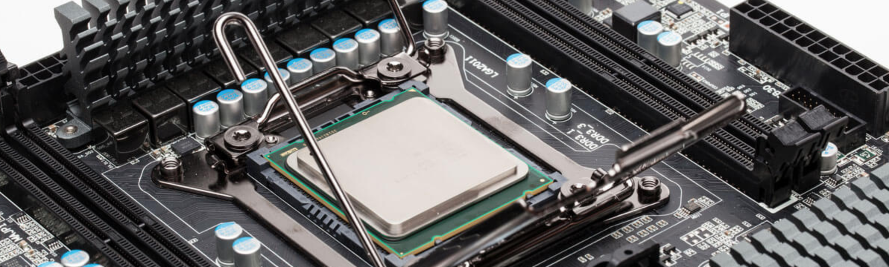
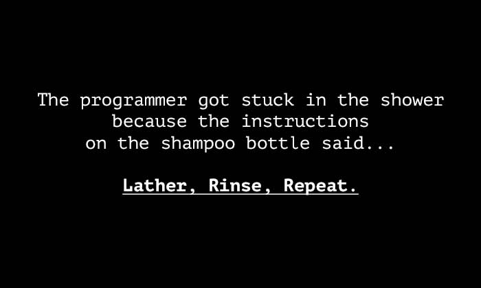
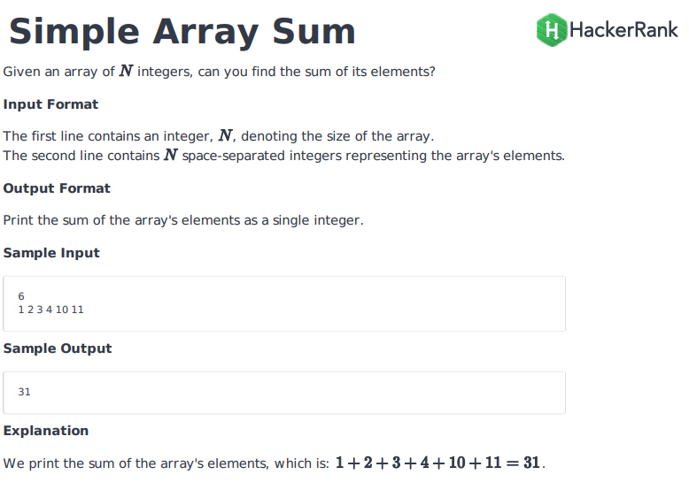
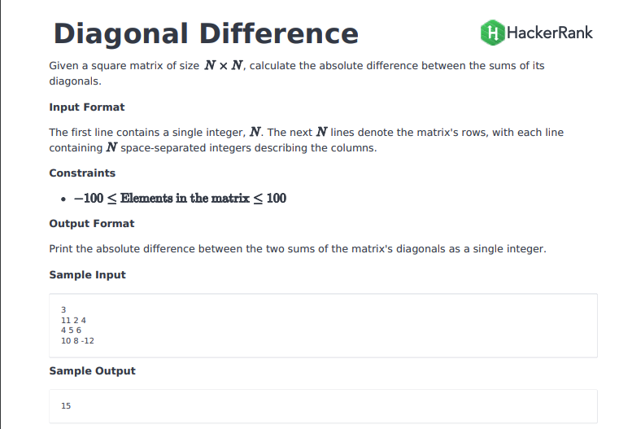

# INFO 450 Spring 2021 # Week 1 ## Think like a computer --- # Course Content We will be using Canvas:<a href="https://virginiacommonwealth.instructure.com/" target="_blank">https://virginiacommonwealth.instructure.com/</a> All assignments will be posted and submitted through Canvas. When we start coding, code will be submitted through Github (which we'll learn soon). Code submissions will be automatically validated with feedback. (beta) --- # Books <ul> <li><a href="https://amzn.to/2YlQFIm" target="_blank">Python Crash Course</a></li> <li> <a href="https://amzn.to/3hOpBch" target="_blank">Python for Data Analysis</a></li> </ul> --- --- # Syllabus <a href="https://virginiacommonwealth.instructure.com/courses/24828" target="_blank">In Canvas</a> --- # HONOR CODE I have a very strict anti-cheating policy. If there are any infractions of the honor code in this class you will get a zero for the class in addition to any punishments deemed necessary by the university. Do. Not. Cheat. I hate sending students to the honor board, but I have, and I will. --- # Python Two years to change this class from C++ to Python. Thank you Dr Wynn (retired)!<br/> * Higher level language with abstractions over languages like C++ * Built in functionality to solve all modern computing challenges * Perfectly suited and widly used for areas like Devops, Data Analysis, Machine Learning and general computing * Easy learning for for the language, to allow us to solve real problems quicker, instead of learning the nuts and bolts of how memory is managed (pointers, yuck) --- # What is Python? "Python is an interpreted, object-oriented, high-level programming language with dynamic semantics. Its high-level built in data structures, combined with dynamic typing and dynamic binding, make it very attractive for Rapid Application Development, as well as for use as a scripting or glue language to connect existing components together. Python's simple, easy to learn syntax emphasizes readability and therefore reduces the cost of program maintenance. Python supports modules and packages, which encourages program modularity and code reuse. The Python interpreter and the extensive standard library are available in source or binary form without charge for all major platforms, and can be freely distributed. " https://www.python.org/doc/essays/blurb/ --- # I'm not convinced, I like ....Java <small> Python programs are generally expected to run slower than Java programs, but they also take much less time to develop. Python programs are typically 3-5 times shorter than equivalent Java programs. This difference can be attributed to Python's built-in high-level data types and its dynamic typing. For example, a Python programmer wastes no time declaring the types of arguments or variables, and Python's powerful polymorphic list and dictionary types, for which rich syntactic support is built straight into the language, find a use in almost every Python program. Because of the run-time typing, Python's run time must work harder than Java's. For example, when evaluating the expression a+b, it must first inspect the objects a and b to find out their type, which is not known at compile time. It then invokes the appropriate addition operation, which may be an overloaded user-defined method. Java, on the other hand, can perform an efficient integer or floating point addition, but requires variable declarations for a and b, and does not allow overloading of the + operator for instances of user-defined classes. For these reasons, Python is much better suited as a "glue" language, while Java is better characterized as a low-level implementation language. In fact, the two together make an excellent combination. Components can be developed in Java and combined to form applications in Python; Python can also be used to prototype components until their design can be "hardened" in a Java implementation. To support this type of development, a Python implementation written in Java is under development, which allows calling Python code from Java and vice versa. In this implementation, Python source code is translated to Java bytecode (with help from a run-time library to support Python's dynamic semantics).</small> --- # I'm not convinced, I like ....C++ Almost everything said for Java also applies for C++, just more so: where Python code is typically 3-5 times shorter than equivalent Java code, it is often 5-10 times shorter than equivalent C++ code! Anecdotal evidence suggests that one Python programmer can finish in two months what two C++ programmers can't complete in a year. Python shines as a glue language, used to combine components written in C++. --- # Logistics For this course, we will be writing our code in Python 3.8. Python 2.7 is dead and Python 3.5 is EOL this year (or so). All of our code will be submitted via Github (www.github.com) and mostly graded automatically. https://docs.github.com/en/github/authenticating-to-github/connecting-to-github-with-ssh - You will need to create a github account for class. One of the first assignments will be to create an account and repository for your submissions. I recommend using Anaconda for your Python environment management. --- # Tech! * Laptop – Windows 10 Professional, MacOS Catalina 10.5 * Visual Studio – newest version of Visual Studio CODE * Linux: Anaconda https://docs.anaconda.com/anaconda/install/windows/ * Mac OS: Anaconda https://docs.anaconda.com/anaconda/install/mac-os/ * Linux: Anaconda https://docs.anaconda.com/anaconda/install/linux/ * Docker: https://docs.docker.com/get-docker/ * Github in VS Code: https://code.visualstudio.com/docs/editor/versioncontrol (use Git plugin, not Github plugin) --- # COMPUTERS <quote>an electronic device for storing and processing data, typically in binary form, according to instructions given to it in a variable program.</quote> - Oxford Dictionary --- # Big 3 * 'Storing' * 'Processing' * 'Instructions' --- # Storage * Volatile * Non-Volatile <img src="memory.png" width="70%"/>  --- # Processing  ## CPU <small> Stands for "Central Processing Unit." The CPU is the primary component of a computer that processes instructions. It runs the operating system and applications, constantly receiving input from the user or active software programs. It processes the data and produces output, which may stored by an application or displayed on the screen. The CPU contains at least one processor, which is the actual chip inside the CPU that performs calculations. For many years, most CPUs only had one processor, but now it is common for a single CPU to have at least two processors or "processing cores." A CPU with two processing cores is called a dual-core CPU and models with four cores are called quad-core CPUs. High-end CPUs may have six (hexa-core) or even eight (octo-core) processors. A computer may also have more than one CPU, which each have multiple cores. For example, a server with two hexa-core CPUs has a total of 12 processors. </small> --- # Processors <small> While processor architectures differ between models, each processor within a CPU typically has its own ALU, FPU, register, and L1 cache. In some cases, individual processing cores may have their own L2 cache, though they can also share the same L2 cache. A single frontside bus routes data between the CPU and the system memory. NOTE: The terms "CPU" and "processor" are often used interchangeably. Some technical diagrams even label individual processors as CPUs. While this verbiage is not incorrect, it is more accurate (and less confusing) to describe each processing unit as a CPU, while each processor within a CPU is a processing core. <a href="https://techterms.com/definition/cpu" target="_blank">TechTerms.com - CPU</a> </small> ## Pprocessor A Processor can execute commands in a linear fashion. --- # Instructions <small> Computer programming is the process of designing and building an executable computer program to accomplish a specific computing result or to perform a specific task. Programming involves tasks such as: analysis, generating algorithms, profiling algorithms' accuracy and resource consumption, and the implementation of algorithms in a chosen programming language (commonly referred to as coding). The source code of a program is written in one or more languages that are intelligible to programmers, rather than machine code, which is directly executed by the central processing unit. The purpose of programming is to find a sequence of instructions that will automate the performance of a task (which can be as complex as an operating system) on a computer, often for solving a given problem. Proficient programming thus often requires expertise in several different subjects, including knowledge of the application domain, specialized algorithms, and formal logic.</small> <a href="https://en.wikipedia.org/wiki/Computer_programming" target="_blank">https://en.wikipedia.org/wiki/Computer_programming</a> --- # Code - Add two numbers - Assembly ``` SECTION .data extern printf global main fmt: db "%d", 10, 0 SECTION .text main: mov eax, 14 mov ebx, 10 add eax, ebx push eax push fmt call printf mov eax, 1 int 0x80 ``` --- # Code - Add two numbers - C ```c #include <stdio.h> int main() { int number1, number2, sum; printf("Enter two integers: "); scanf("%d %d", &number1, &number2); // calculating sum sum = number1 + number2; printf("%d + %d = %d", number1, number2, sum); return 0; } ``` --- # Code - Add two numbers - Python ```python a = 1 b = 2 print(a + b) ``` --- # More Problem Solving * Let's continue to figure out 'how' to program logic, not just the programming part. --- # Instructions Your roommate has invented a really cool robot. Yes, a REAL robot that does things at your command! This robot is super smart and is instructed by interacting with the human voice. No programming required! The robot can understand simple instructions. Grab something, turn something, squeeze, punch, lift, all kinds of commands. If I wanted the robot to do a jumping jack, I'd tell it something like: <quote>Robot, start with your hands at your sides and your feet together. Then, jump up and spread your legs until your feet are 18 inches apart while you're raising your arms to the side until they're at a 45 degree angle to your shoulers. Reverse the motion to your starting point, then repeat 10 times</quote> Professors note: I don't think those instructions are detailed enough, but hopefully you get the point. --- # Oh dang. I'm hungry Can anyone make me a peanut butter and jelly sandwich? * Everyone take 10 minutes * Use notepad, email, piece of paper, whatever * Write down your instructions * I will randomly pick people to read their instructions * We will all critique them. --- # How to Solve Problems https://hackernoon.com/how-to-approach-any-coding-problem-9230f3ad6f9 * Understand and Analyse the Problem * Go through the sample inputs and examples thoroughly * Break down the problem * Start solving/coding * Look Back and Learn More --- # Understand and Analyse the Problem Read the problem. Read it two more times. Do you understand what the problem is saying? What are the inputs to the problem? What are the outputs of the problem? Do you need more information? ---  --- # Sample Inputs and Examples Going through some sample inputs and coming up with more examples sure helps you a lot to understand the problem well, and moreover, it gives you a clear way to how many cases your code should handle, and what all can be the possible output or output range. Suggestion * Take very simple examples and find the output * Take more complex and bigger inputs to see what will be the output, how many use cases do we want Time to handle the edge cases * Try out the problem with no input, what should be the output now * Try out the problem with invalid input, what should be the output now --- # Break down the problem * Try to make a mental flow chart * Divide the problem into module/sub problems * Connect sub problems into a mental flow * Start thinking about classes (CHF: more to come) --- # Start solving/coding * Where do you start * Where are you now * What is your destination --- # Let's apply this to some real problems hackerrank It's my favorite. --- # Hacker Rank 1  --- # Hacker Rank 2  --- # Hacker Rank 3 <a href="hr3.pdf" target="_blank">Challenge 3</a> --- # Homework Homework is ALWAYS due the Monday after class, by 11:59:59 PM. If it's after that by even a second, the maximum score you can receive is a 50%. (Normal grading of work, divided by 2.0 for final grade) This week is simply, by next Monday, create a <a href="github.com" target="_blank">Github account</a> with your VCU email address and your user name as "vcu-[account name]" e.g. My github account is: <a href="https://github.com/vcu-chfauerbach" target="_blank">https://github.com/vcu-chfauerbach</a> (( Do you have @vcu.edu or @[somethingelse].vcu.edu? )) With a gigantic class this semester, I have to automate things. Once you create your account, submit the link to your profile (in the form of mine above, https://github.com/vcu-chfauerbach) via Canvas. ---